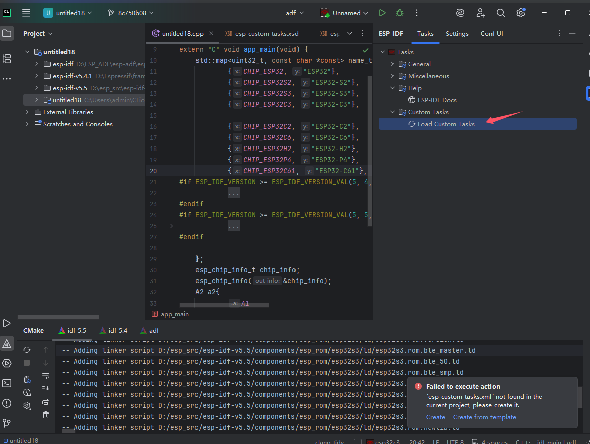
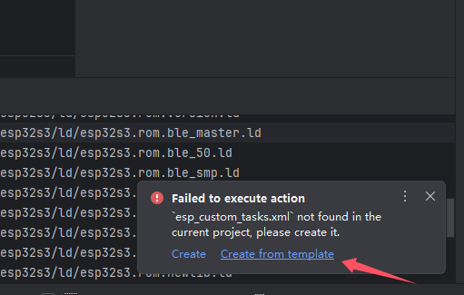
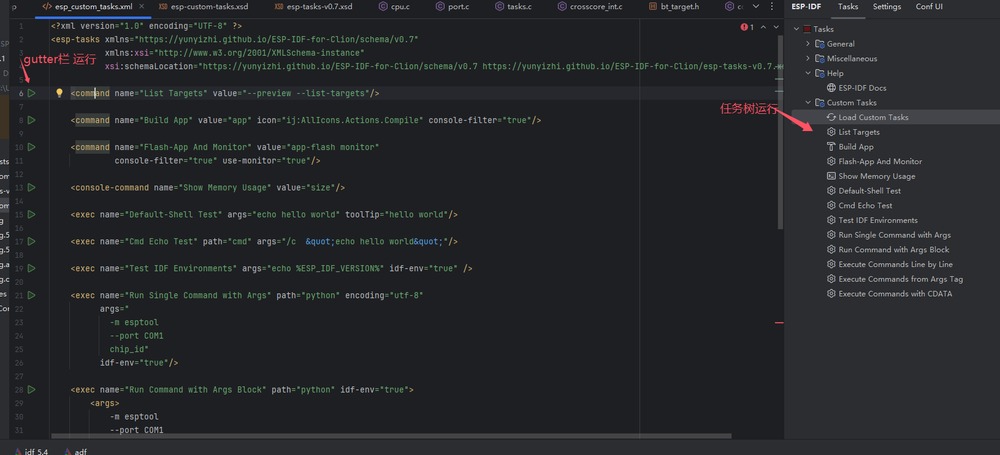
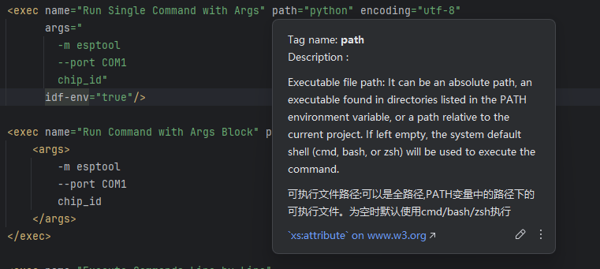
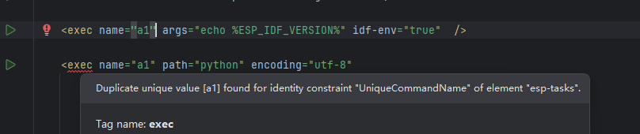

快捷命令树

双击树上节点可以创建对应任务运行。
快捷命令树会在任意的项目中保留，正常情况是给ESP-IDF项目使用。
自定义任务
新建的项目并无自定义任务。点击load会报错。

首次使用可以按模板创建

然后会得到以下内容

可点击左侧gutter栏运行图标进行运行，或者修改xml后手动加载任务，使用任务树执行。
自定义任务的标签属性
command
idf.py的命令。源自插件内部的任务树配置，可以实现串口占用抢占和控制台过滤器(文件链接可以跳转ide的具体行等)
会使用当前Profile的配置
属性 | 类型 | 必填 | 默认值 | 描述 |
|---|---|---|---|---|
name | string | 是 | NA | 名称，全局不可重复，用于gutter栏，执行器生成执行命令的key,所以在gutter点击运行时，后声明的会覆盖之前同名的，所以不允许同名 |
icon | string | 否 | NA | 任务树的图标，只是复用内部任务项，图标较少 |
toolTip | string | 否 | 在任务树的悬浮提示 | |
value | string | 是 | NA | idf.py的命令值，例如值为 |
console-filter | boolean | 否 | false | 使能此项后，会对控制台视图输出进行处理，stderr会被以红色标记，打印的具体文件行也会变成链接可以进行跳转 |
request-port | boolean | 否 | false | 请求串口。会关闭当前占用该串口的Monitor任务 |
use-monitor | boolean | 否 | false | 注册为Monitor任务，同一串口的当前任务会被request-port任务中断，本属性也包含request-port能力 |
console-command
命令终端任务，会在终端中执行任务。
属性 | 类型 | 必填 | 默认值 | 描述 |
|---|---|---|---|---|
name | string | 是 | NA | 名称，全局不可重复，用于gutter栏，执行器生成执行命令的key,所以在gutter点击运行时，后声明的会覆盖之前同名的，所以不允许同名 |
icon | string | 否 | NA | 任务树的图标，只是复用内部任务项，图标较少 |
toolTip | string | 否 | 在任务树的悬浮提示 | |
value | string | 是 | NA | idf.py的命令值，例如值为 |
exec
本地任务，可以调用指定路径的bin文件，执行，也可继承当前Profile的环境变量。比如使用esptool烧录多app的固件等。
属性 | 类型 | 必填 | 默认值 | 描述 |
|---|---|---|---|---|
name | string | 是 | NA | 名称，全局不可重复，用于gutter栏，执行器生成执行命令的key,所以在gutter点击运行时，后声明的会覆盖之前同名的，所以不允许同名 |
icon | string | 否 | NA | 任务树的图标，只是复用内部任务项，图标较少 |
toolTip | string | 否 | 在任务树的悬浮提示 | |
path | string | 否 | NA | 可执行程序路径，在环境变量中可查找到，或者使用全路径。若需要相对本项目的路径请使用args参数传给shell |
args | string | 否 | NA | 可为行内属性，或子标签，复杂传参可以使用子标签，在子标签也可以使用CDATA包裹内容可以避免使用转义 |
idf-env | boolean | 否 | false | 是否使用当前Profile的环境变量 |
in-terminal | boolean | 否 | false | 在终端中执行，当在终端中执行时，命令可原样传递，可支持多行对应多个命令。而当非则终端模式， 则视为需要创建单一进程，会将多行命令也解析为单行参数 |
encoding | string | 否 | NA | 对非终端模式下，可以设置此项指定控制台输出的具体编码，为空将从系统获取， |
自定义任务xml的xsd文件
xsd可以帮助clion对xml进行检查，提示文档注释和自动补全


目前计划使用插件主版本号和main后缀划分不同的namespace 比如0.7开始有: https://yunyizhi.github.io/ESP-IDF-for-Clion/schema/v0.7 https://yunyizhi.github.io/ESP-IDF-for-Clion/schema/main
main后缀对应最新版本，目前是0.7
注意事项
IDF Export Console会使用原来的export脚本，将环境变量导入当前会话，比本插件直接对比环境变量差异追加的环境变量更加全面。例如espefuse.py在IDF Console中无法使用，建议使用IDF Export Console.在CLion的终端里面的使用MenuConfig 中使用ESC默认行为是上方编辑器获取焦点。
从而使得ESC不可操作Menuconfig。 建议移除终端的ESC按键将焦点切换到编辑器功能
进入Settings ->keymap -> Plugins | Terminal | Switch Focus To Editor 中文版本是 设置->按键映射->插件 | Terminal | 将焦点切换到编辑器
环境变量中可能含不能被shell处理的字符，在powershell中本插件会自动加上引号但不能应对所有情况，而linux与macos将使用clion提供的api自动完成环境变量导出， 可能在shell上出现不符合语法的字符串会导致命令截断，目前会主动去除这两个变量
IDF_PY_COMP_WORDBREAKSCOMP_WORDBREAKS。MacOS下终端类型任务命令截断
由于最近clion252终端已经重构，在不同版本行为可以与编写文档时测试行为不一致，可以尝试切换经典终端和新终端进行验证。